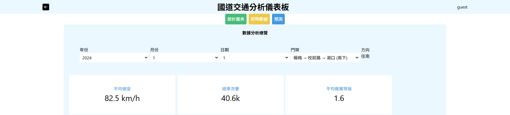
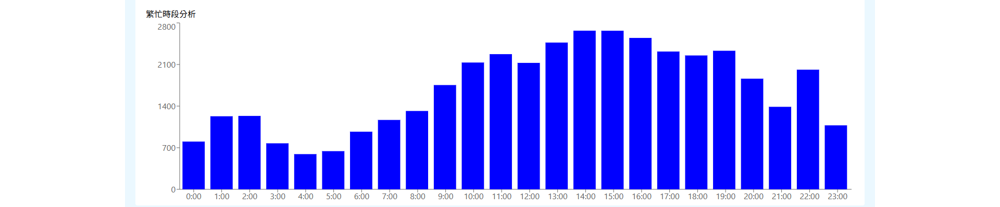
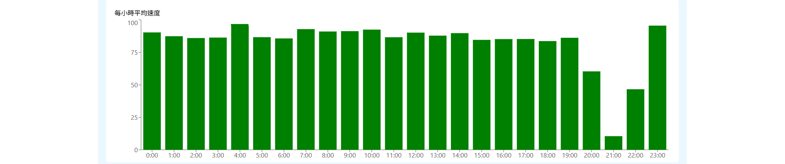
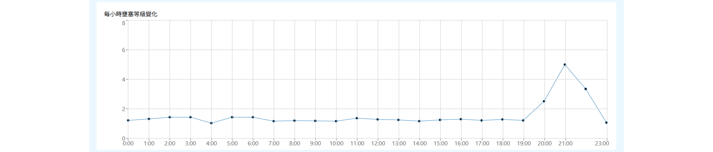
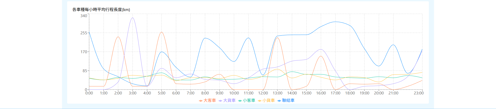

統計頁面 📌

可以篩選資料: 輸入時間 跟 路段； 可以先得知在設定的條件下 平均速度、總車輛 以及 平均壅塞等級是多少。

繁忙時段圖表 顯示某個時段的總車輛有多少。

每小時平均速度圖表 顯示某個時段的平均速度有多少。

每小時壅塞等級變化圖表顯示每個時段的雍塞等級。
車輛類型分布表 顯示某個路段的車類型成分。

各種每小時平均形程長度表 顯示每一種車類的每個小時的不同旅程長度成。